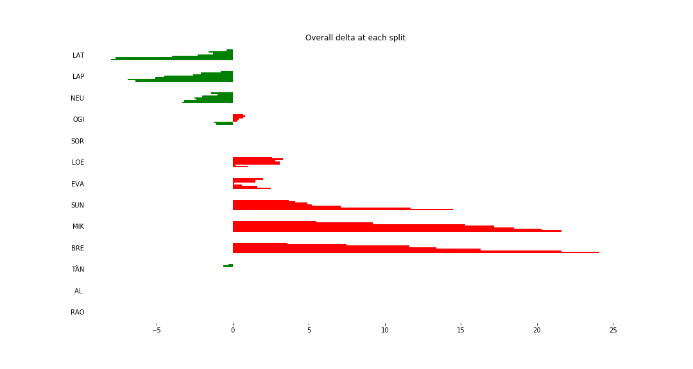
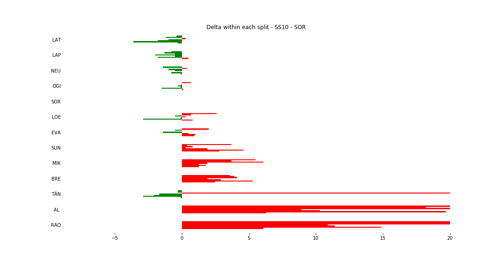
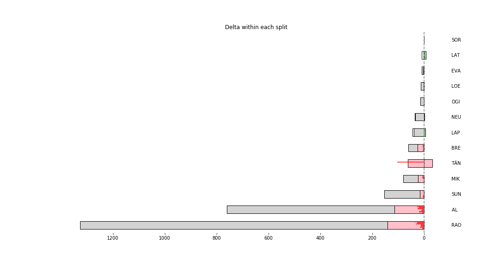

Stage Overall Split Delta Chart - Spain, 2018 - SOR - SS10

Stage Within Split Delta Chart - Spain, 2018 - SOR - SS10

Stage Progress Chart - Spain, 2018 - SOR - SS10

| Driver | Team | Elapsed Duration | Position | Class Rank | diffFirst | diffPrev |
|---|---|---|---|---|---|---|
| LAT | TOYOTA GAZOO RACING WRT | 00:12:58.4000000 | 1 | 1 | 00:00:00 | 00:00:00 |
| LAP | TOYOTA GAZOO RACING WRT | 00:13:00 | 2 | 2 | 00:00:01.6000000 | 00:00:01.6000000 |
| NEU | HYUNDAI SHELL MOBIS WRT | 00:13:03.1000000 | 3 | 3 | 00:00:04.7000000 | 00:00:03.1000000 |
| OGI | M-SPORT FORD WORLD RALLY TEAM | 00:13:05.3000000 | 4 | 4 | 00:00:06.9000000 | 00:00:02.2000000 |
| SOR | HYUNDAI SHELL MOBIS WRT | 00:13:06.4000000 | 5 | 5 | 00:00:08 | 00:00:01.1000000 |
| LOE | CITROËN TOTAL ABU DHABI WRT | 00:13:07.4000000 | 6 | 6 | 00:00:09 | 00:00:01 |
| EVA | M-SPORT FORD WORLD RALLY TEAM | 00:13:08.9000000 | 7 | 7 | 00:00:10.5000000 | 00:00:01.5000000 |
| SUN | M-SPORT FORD WORLD RALLY TEAM | 00:13:20.9000000 | 8 | 8 | 00:00:22.5000000 | 00:00:12 |
| MIK | HYUNDAI SHELL MOBIS WRT | 00:13:28 | 9 | 9 | 00:00:29.6000000 | 00:00:07.1000000 |
| BRE | CITROËN TOTAL ABU DHABI WRT | 00:13:30.5000000 | 10 | 10 | 00:00:32.1000000 | 00:00:02.5000000 |
| TÄN | TOYOTA GAZOO RACING WRT | 00:14:41.4000000 | 28 | 11 | 00:01:43 | 00:00:14 |
| AL | CITROËN TOTAL ABU DHABI WRT | 00:15:00.2000000 | 29 | 12 | 00:02:01.8000000 | 00:00:18.8000000 |
| RAO | JEAN-MICHEL RAOUX | 00:15:26.1000000 | 30 | 13 | 00:02:27.7000000 | 00:00:25.9000000 |